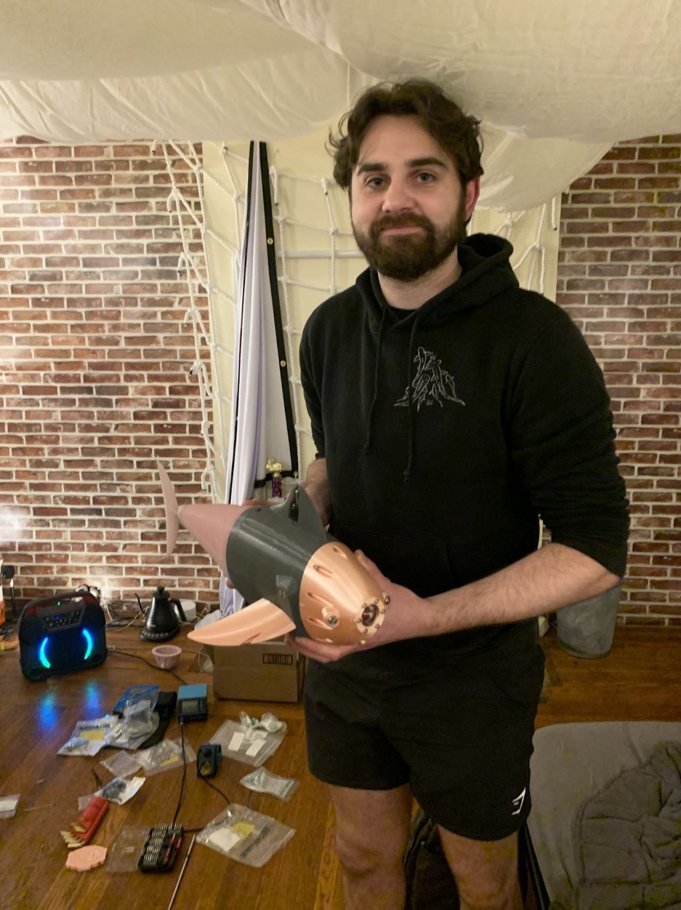
This robot fish is the culmination of a year’s worth of work that me and
four other engineers worked on for our senior design project. There is a
full report linked
here that goes in-depth
to the process, but I will hit some of the main aspects of it here.
Starting off with a main goal was important and ours was for the fish to
be able to swim from an undulating flexible tail, record measurements,
and take video. We broke this down into smaller chunks and began
researching what needed to be done for each of the requirements. I
started work on the tail and some of the modeling. For the tail I had to
learn how to make a FEA simulation using Simcenter for a non-linear
material. I then assessed different thicknesses and pocket dimensions to
determine the optimal size of the tail.
Once that was finished, we cast the tail out of silicone in two sections
and glued them together. This proved to be difficult as there were some
leaks across between the inside chambers and the outside. We then began
working on the gear pump which was used to pump water back and forth
between the two sides of the tail. This was the most difficult part of
the project and in the end, there were seventeen different iterations
before we finally got the pump to work properly. This final pump worked,
with only a week before we were supposed to present it. This massively
ate into the time we had to work on everything else and meant there was
a big final push at the end.
The final stage was to get the electronics programed and finalized. I
had slowly been working on the programming for the past few months, so
getting everything wired up and properly programmed only took a few
days, but there were still several issues that had there been enough
time, should have been fixed. By the end of the project, we all wanted
the fish to swim, and once we tested it, it was clear that the fish had
too much mass for the motion it was creating, because of this, there was
very little forward motion.
Some of the things that I
learned during this project were non-linear FEA, proper sealing between
parts using gaskets and O-rings, running multiple programs on a
raspberry pi, gear pumps, molding silicone, and readings and writing to
recording files.
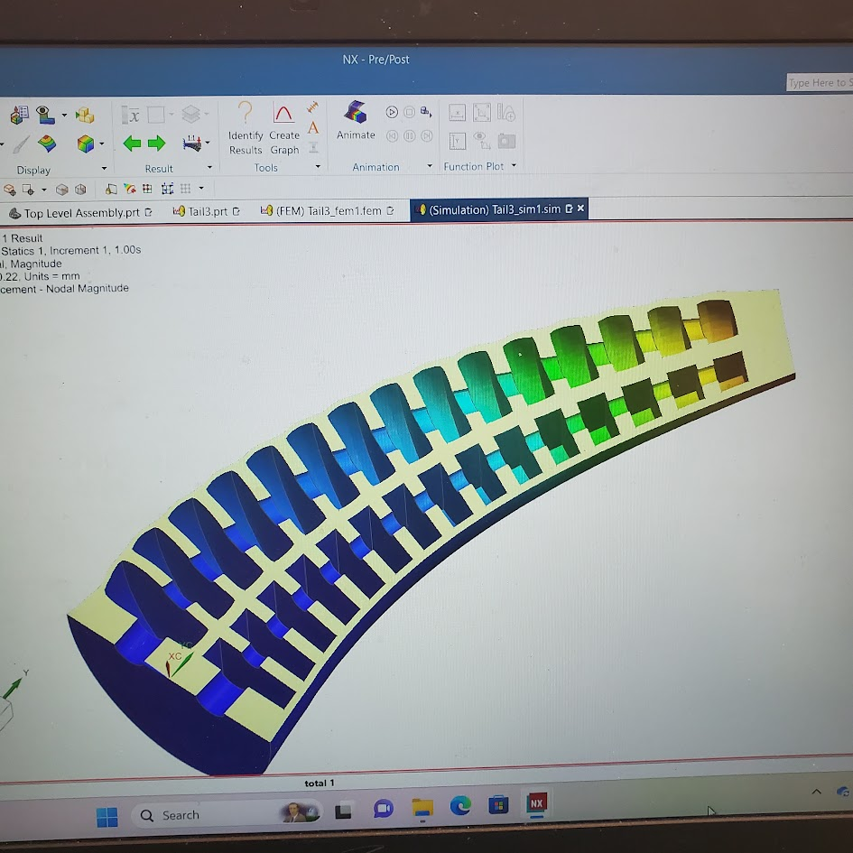
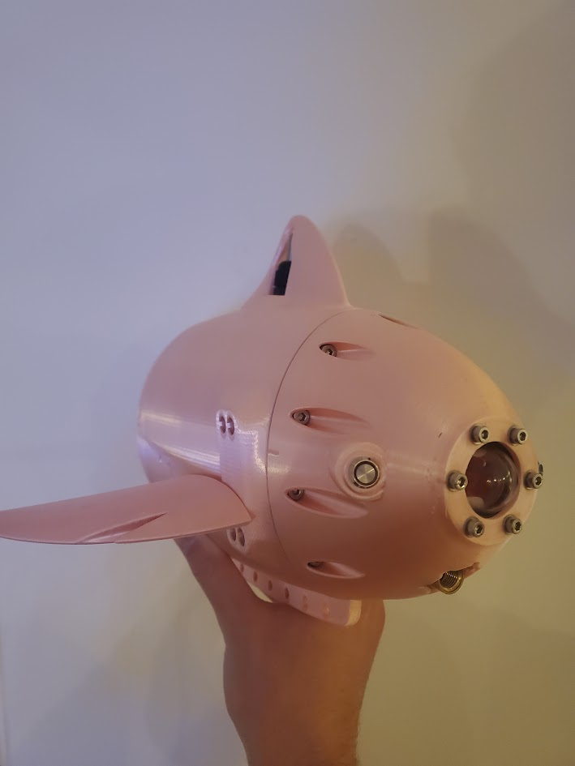
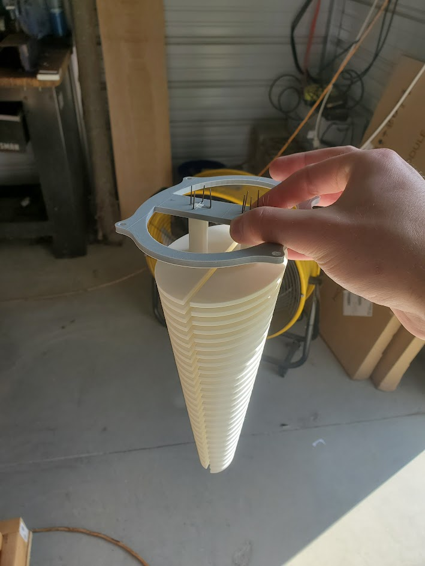
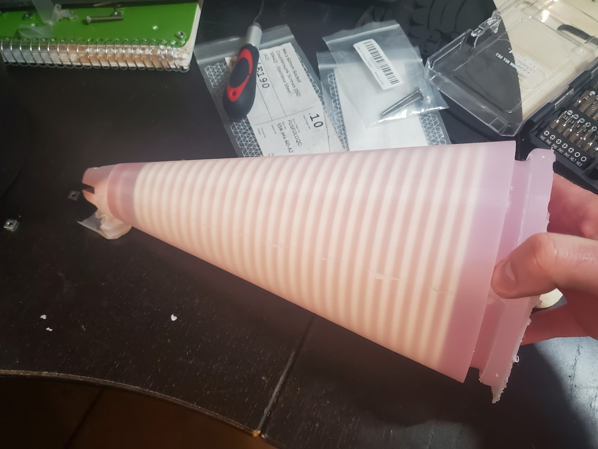
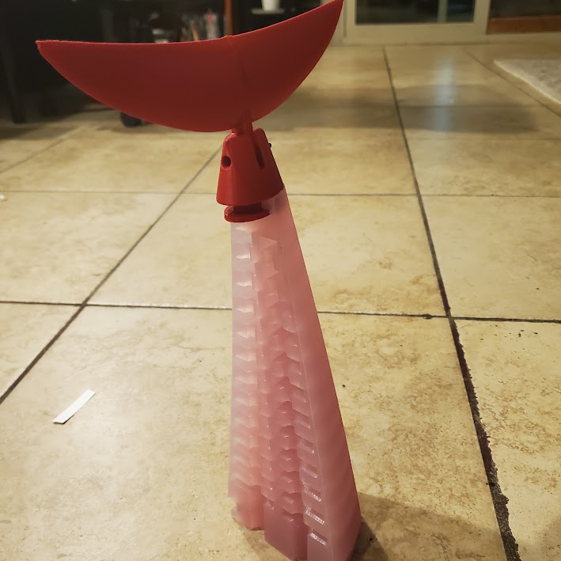
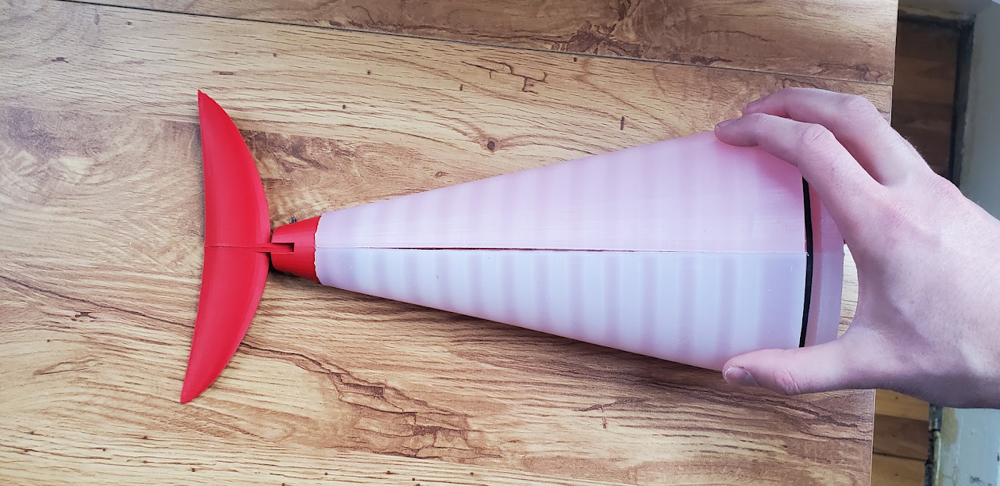
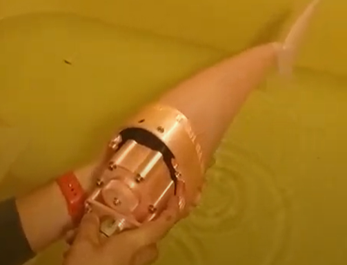
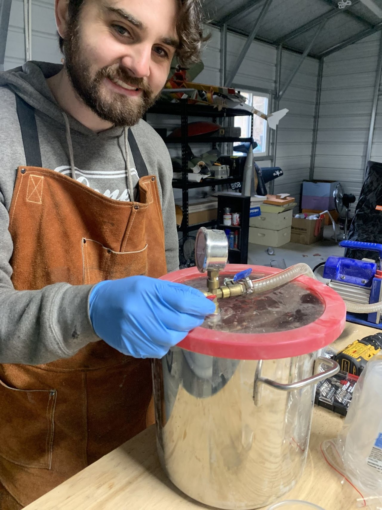
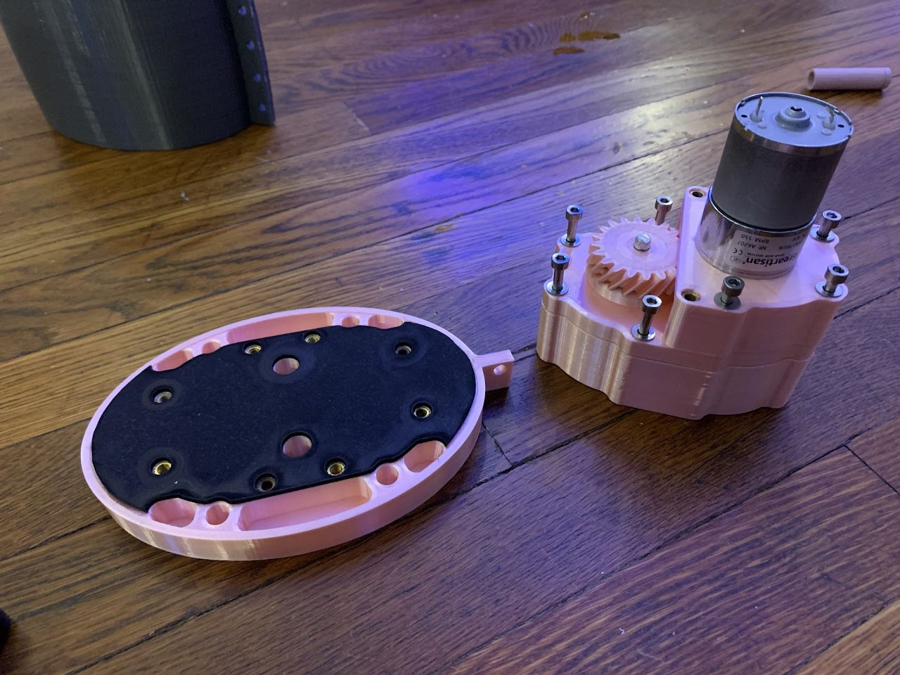
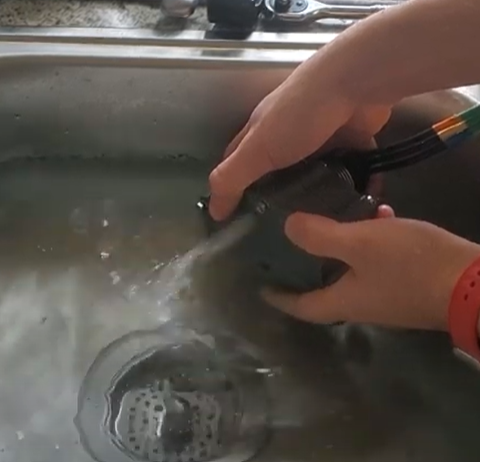
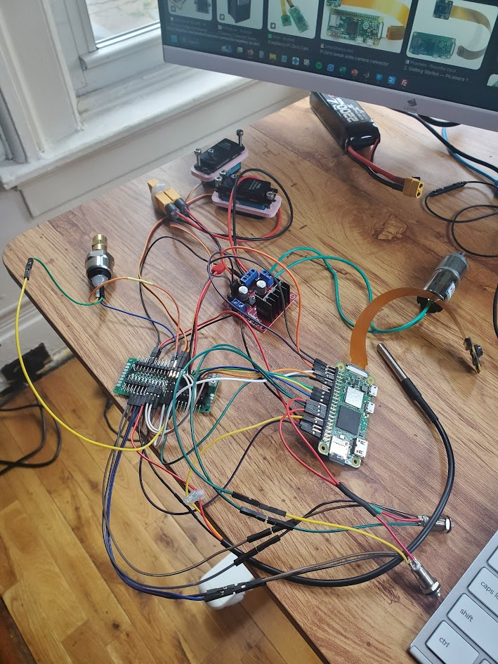
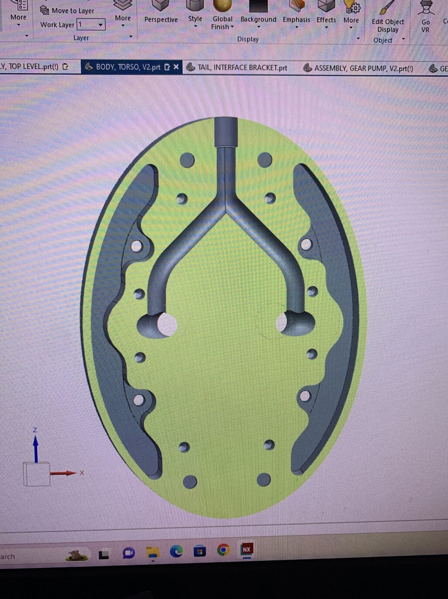
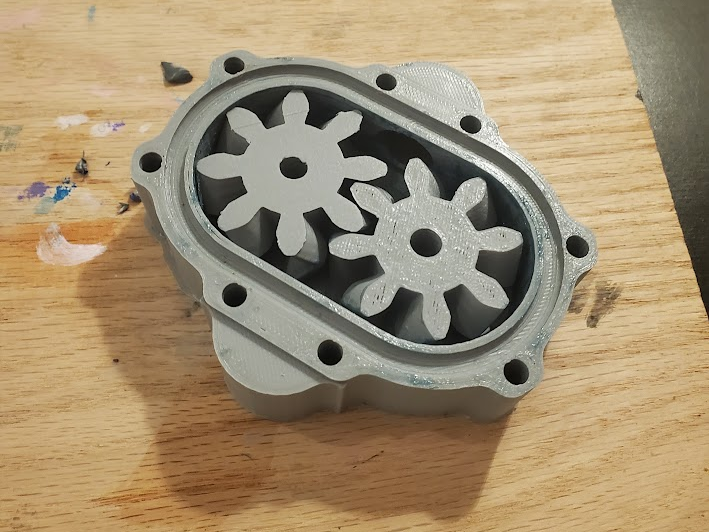